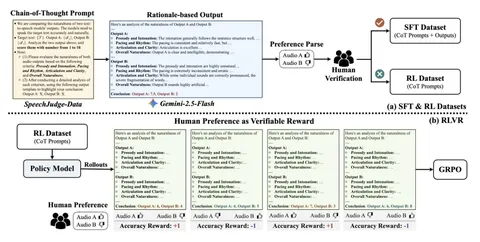

Сегодня начинаем разбирать три работы о speech reward models — SpeechJudge, GSRM и UniSRM. Все они строят генеративного судью поверх Qwen2.5-Omni-7B и дистиллируют ризонинг у более сильной модели. Отличаются тем, что именно чинят — данные, восприятие или награду. SpeechJudge вкладывается в разметку: 99 тысяч пар от живых людей. GSRM меняет вход: рассуждение строится не по самому аудио, а по явно вытащенным DSP-признакам просодии. UniSRM меняет награду: на RL-стадии проверяется не только финальный вердикт, но и оценки по каждому измерению внутри рассуждения.
Начнём с того, зачем вообще нужна отдельная reward model для речи. Ответ — чтобы нормально заводить RL-алайнмент TTS. Обычные метрики когда-то были неплохим прокси, но постепенно насытились. Низкий WER уже мало говорит о натуральности, ведь если продолжать оптимизировать только его, можно получить очень разборчивую, но роботизированную речь. UTMOS и похожие оценщики тоже возвращают один скаляр, который сложно интерпретировать и легко начать оптимизировать не в ту сторону.
В базовом сетапе модель генерирует два аудио, человек выбирает лучшее, а reward model учится воспроизводить этот выбор. Скалярному судье можно просто прикрутить линейную голову и обучить по модели Брэдли-Терри. Генеративная модель дополнительно делает ризонинг, объясняя, что происходит с натуральностью, артикуляцией, темпом и просодией, а потом выбирает победителя. Такого судью можно сначала проверить через best-of-N, а затем использовать в DPO или онлайн-GRPO.
SpeechJudge
Авторы собрали 99 тысяч размеченных людьми пар аудио: шесть zero-shot TTS-моделей трёх архитектур, китайский, английский и code-switching, обычная и выразительная речь.
Неоднозначные пары отправляли дополнительным асессорам, в среднем получилось 2,49 оценки на пару. Затем отфильтровали спорные примеры и пары, где записи слишком расходились по WER — иначе разница в разборчивости забивает натуральность. Осталось 44 тысячи пар: 42 тысячи для обучения, по тысяче для dev- и SpeechJudge-бенчмарка.
Лучшим готовым судьёй на этом бенчмарке оказался Gemini 2.5 Flash, поэтому его взяли как учителя. Дальше обучение шло в две стадии. Для 25 тысяч пар, где вердикт Gemini совпал с человеческой меткой, сгенерированные reasoning traces использовали для SFT. Оставшиеся 17 тысяч пар отправили в RL. Правильная человеческая метка выступала verifiable reward, а модель пыталась сама достроить рассуждение, которое к ней приводит.
Но совпавший финальный ответ ещё не означает, что промежуточное рассуждение корректно. Gemini могла выбрать нужное аудио на мусорном reasoning trace, а затем этот trace попадал в SFT. В следующих работах как раз пытаются отдельно чинить восприятие аудио и проверять качество ризонинга.
И всё же постобучение помогло. Генеративный SpeechJudge обошёл Gemini 2.5 Flash и скалярный Bradley-Terry-бейзлайн, а голосование по нескольким запускам дало ещё небольшой прирост.
Авторы этой статьи — единственной из трёх, где судью применили к самой TTS-модели, — проверили, насколько ему можно доверять на практике. В best-of-100 он выбирал лучшее аудио, после чего человек сравнивал его со случайным семплом из той же сотни. Примерно в 30% случаев случайное аудио оказывалось лучше. На отдельном тесте «синтетическая речь против настоящей» SpeechJudge тоже просел: модель обучалась только на синтетических парах и выучила более узкую задачу, а deepfake-детекторы справились лучше.
То есть SpeechJudge показывает, что генеративную speech reward model действительно можно обучить поверх human preferences. Но хороший результат на собственном бенчмарке ещё не гарантирует, что судья не сломается на новом распределении или внутри RL. В следующей части разберём ещё две статьи о speech reward models.
Василий Ерёмин
